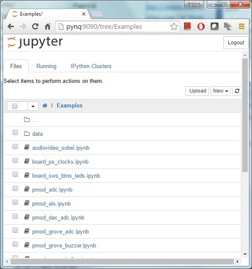

Getting Started¶
Table of Contents
This guide will show you how to setup your computer and PYNQ-Z1 board to get started using PYNQ. Any issues can be posted to the PYNQ support forum.
Video Guide¶
You can watch the getting started video guide, or follow the instructions below.
Prerequisites¶
- PYNQ-Z1 board
- Computer with compatible browser (Supported Browsers)
- Ethernet cable
- Micro USB cable
- Micro-SD card with preloaded image, or blank card (Minimum 8GB recommended)
Get the image and prepare the Micro-SD Card¶
Preloaded Micro SD cards are available from Digilent. If you already have a Micro SD card preloaded with the PYNQ-Z1 image, you can skip this step.
To make your own PYNQ Micro-SD card:
Download and the PYNQ-Z1 image and unzip
- Write the image to a blank Micro SD card (minimum 8GB recommended)
- Windows: Use win32DiskImager
- Linux/MacOS: Use the built in dd command*
* For detailed instructions for writing the SD card using different operating systems, see the Appendix: Writing the SD card image.
Setup the PYNQ-Z1¶

- Set the boot jumper (labelled JP4 on the board) to the SD position by placing the jumper over the top two pins of JP4 as shown in the image. (This sets the board to boot from the Micro-SD card)
- To power the PYNQ-Z1 from the micro USB cable, set the power jumper (JP5) to the USB position by placing the jumper over the top two pins of JP5 as shown in the image. (Set the jumper to REG to use an external power regulator)
- Insert the Micro SD card loaded with the PYNQ-Z1 image into the board. (The Micro SD slot is underneath the board)
- Connect the USB cable to your PC/Laptop, and to the PROG/UART (J14) on the board
- Connect the Ethernet cable into your board and see the step below for connecting to a computer or network
- The last step is to power on the board. You should follow the steps below to connect to the board before powering on.
Ethernet connection to the board¶
You can connect the Ethernet port of the PYNQ-Z1 Ethernet in the following ways:
- To a router or switch on the same network as your computer
- Directly to an Ethernet port on your computer
If available, you should connect your board to a network with Ethernet access. This will allow you to update your board and install new packages.
Connect to a network¶
If you connect to a network with a DHCP server, your board will automatically get an IP address. You must make sure you have permission to connect a device to your network, otherwise the board may not connect properly.
| Router/Network switch (DHCP) |
|---|
|
|
|
|
* This can be done after the board is powered on. See below for instructions
The default hostname is pynq. If there is another device on the network with this hostname, you will need to change the hostname of your board before you connect it to the network. If you are not sure if there are other boards on the network, you should check if the pynq hostname is already in use before connecting a new board. One way to check this is by pinging pynq from a command prompt:
ping pynq
If you get a response from ping, this means there is already another device on the network with this hostname.
You can use a USB terminal connection to change the hostname before you connect your board to the network. If you are using a shared network, you should change the default hostname of the board in case other boards are connected to the network later.
You can also use the terminal to configure proxy settings, or to configure any other board settings. See below for detail on how to connect a terminal.
Connect directly to your computer¶
You will need to have an Ethernet port available on your computer, and you will need to have permimssions to configure your network interface. With a direct connection, you will be able to use PYNQ, but unless you can bridge the Ethernet connection to the board to an Internet connection on your computer, your board will not have Internet access. You will be unable to update or load new packages without Internet access.
| Direct Connection to your computer (Static IP) |
|---|
|
|
|
Powering on¶
As indicated in step 6 in the diagram above, slide the power switch to the ON position to Turn On the board. A Red LED will come on immediately to confirm that the board is powered on. After a few seconds, a Yellow/Green LED (LD12/DONE) will light up to show that the Zynq® device is operational.
After about 30 seconds you should see two blue LEDs and four yellow/green flash simultaneously. The blue LEDS will then go off while the yellow/green LEDS remain on. At this point the system is now booted and ready for use.
Connect to Jupyter¶
Open a web browser and go to http://pynq:9090 (network) http://192.168.2.99:9090 (direct connection)
The Jupyter username is xilinx and the password is also xilinx
{kind=link}
The default hostname is pynq and the default static IP address is 192.168.2.99. If you changed the hostname or static IP of the board, you will need to change the address you browse to.
The first time you connect, it may take a few seconds for your computer to resolve the hostname/IP address.
Change hostname¶
If you are on a network where other pynq boards may be connected, you should change your hostname immediately. This is a common requirement in a work or university environment.
A terminal is available inside Jupyter. In the Jupyter portal home area, select New >> terminal.
{kind=link}
This will open a terminal inside the browser as root.
Next enter and execute the following command. (Note that you should replace NEW_HOST_NAME with the hostname you want for your board.)
sudo /home/xilinx/scripts/hostname.sh NEW_HOST_NAME
Follow the instructions to reboot the board.
sudo shutdown -r now
When the board reboots, reconnect using the new hostname. e.g. http://pynq_cmc:9090
If you can’t connect to your board, see the step below to open a terminal using the micro USB cable.
Connect to the PYNQ-Z1 board with a terminal connection over USB¶
If you need to change settings on the board but you can’t access the terminal from Jupyter, you can connect a terminal over the micro USB cable that is already connected to the board. You can also use this terminal to check the network connection of the board. You will need to have terminal emulator software installed on your computer. PuTTY is available for free on Windows. To open a terminal, you will need to know the COM port for the board.
On Windows, you can find this in the Windows Device Manager in the control panel.
- Open the Device Manager, expand Ports
- Find the COM port for the USB Serial Port. e.g. COM5
Once you have the COM port, open PuTTY and use the following settings:
- Select serial
- Enter the COM port number
- Enter the baud rate
- Click Open
Hit Enter in the terminal window to make sure you can see the command prompt:
xilinnx@pynq:/home/xilinx#Full terminal Settings:
- 115200 baud
- 8 data bits
- 1 stop bit
- No Parity
- No Flow Control
You can then run the same commands listed above to change the hostname, or configure a proxy.
You can also check the hostname of the board by running the hostname command:
hostname
You can also check the IP address of the board using ifconfig:
ifconfig
Configure proxy¶
If your board is connected to a network that uses a proxy, you need to set the proxy variables on the board. Open a terminal as above and enter the following where you should replace “my_http_proxy:8080” and “my_https_proxy:8080” with your settings.
set http_proxy=my_http_proxy:8080 set https_proxy=my_https_proxy:8080
Using PYNQ¶
Getting started notebooks¶
A Jupyter notebook can be saved as html webpages. Some of this documentation has been generated directly from Jupyter notebooks.
You can view the documentation as a webpage, or if you have a board running PYNQ, you can view and run the notebook documentation interactively. The documentation available as notebooks can be found in the Getting_Started folder in the Jupyter home area.

There are also a number of example notebooks available showing how to use various peripherals with the board.
{kind=link}
When you open a notebook and make any changes, or execute cells, the notebook document will be modified. It is recommended that you “Save a copy” when you open a new notebook. If you want to restore the original versions, you can download all the example notebooks from the PYNQ GitHub page .
Accessing files on the board¶
Samba, a file sharing service, is running on the board. The home area on the board can be accessed as a network drive, and you can transfer files to and from the board.
In Windows, to access the PYNQ home area you can go to:
\\pynq\xilinx
or
\\192.168.2.99\xilinx
Or in Linux:
smb://pynq/xilinx
or
smb://192.168.2.99/xilinx
Remember to change the hostname/IP address if necessary.
The Samba username:password is xilinx:xilinx
{kind=link}
Update PYNQ¶
You can update the pynq package by executing the script:
/home/xilinx/scripts/update_pynq.sh
This will check the pynq GitHub, download and install the latest release.
Updating will overwrite the introductory and example notebooks. You should make sure you take a backup of this, and any code you added to the pynq python directory.
Troubleshooting¶
If you are having problems, please see the Frequently asked questions or go the PYNQ support forum